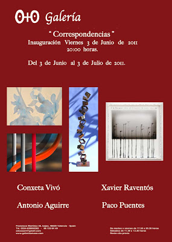

"Correspondencias": Inauguración 3 de Junio de 2011 a las 20.00 h
lunes, 30 de mayo de 2011
{kind=link}

“Correspondencias"
Del 3 de Junio al 3 Julio 2011
Inauguración 3 de Junio a las 20:00 horas
Cuatro artistas son los encargados de cerrar la temporada de la Galería O+O de Valencia. Una temporada de duro trabajo llena de exposiciones, ferias, cursos, publicaciones e inauguraciones, donde un año más ha ganado el Arte. Termina un periodo con grandes emociones, el mes pasado se produjo una doble celebración el cuarto aniversario de la galería y su nueva sede en Pekin (China). Del broche final de esta temporada se encarga la exposición colectiva “Correspondencias” compuesta por las pinturas, esculturas, infografías y fotografías de cinco artistas Paco Puentes, Conxeta Vivó, Xavier Raventós y Antonio Aguirre. Un viaje desde la abstracción pasando por la figuración, utilizando variadas técnicas, materiales y formatos. Fotografías que se alían con materiales externos, aguadas que difuminan y definen al unísono, materiales que contradicen su esencia, imágenes reflejo de la distorsión de lo real y nuevos medios que transforman la pintura.
Paco Puentes (1972, Córdoba), técnico Superior en Fotografía Artística, se inicia en el fotoperiodismo en el año 2002, publicando sus trabajos en más de una treintena de medios nacionales e internacionales. Ha participado en diversos certámenes de arte internacional como son el Kunstart 2009 de Bolzano (Italia) y en Open Art Fair Utrecht 2008 (Holanda). Su obra ha formado parte de diversas exposiciones y ha recibido varios premios de Fotografía. En la actualidad combina el fotoperiodismo con la fotografía artística. Con sus series “Incomunicados” y “S/T”, muestra su concepción de la fotografía. Instantáneas montadas sobre tabla e intervenidas mediante pinturas, manuscritos y chapas oxidadas Piezas donde la fotografía es la base para desarrollar conceptos como el movimiento, los recuerdos, paisajes, el individuo, color, sombras… un conjunto de idas y venidas que forman retazos de ideas.
Licenciada en Bellas Artes por la Facultad de San Carlos, la joven artista Conxeta Vivó (1985, Valencia), ha mostrado sus trabajos en ciudades como Madrid, Valencia y Alicante. Con una obra delicada e intimista, que va más allá de meros formalismos estéticos, presenta un trabajo profundo concebido como un ejercicio de reflexión. Para ello se nutre de los trazos de la pintura china y japonesa, siempre desde una estética propia y contemporánea. Un orientalismo pictórico que se compone de detalles delicados y minuciosos trazos. Donde la Naturaleza se presenta en su pleno esplendor, mostrando orgullosa el tránsito de sus estaciones. Manchas traslúcidas que en sus acuarelas se transforman en sutiles motivos florares llenos de luz y color. Conxeta Vivó encuentra un gran aliado en la técnica de la acuarela para la creación de sus piezas que oscilan a medio camino entre la figuración y la abstracción y que logran crear una atmósfera de tonalidades donde el tiempo parece detenerse.
Los trabajos del escultor Xavier Raventós (1951, Barcelona) han viajado por Tarragona, Barcelona, Valencia, Menorca, Zaragoza, Madrid, Mónaco, Paris, Roma, etc. En esta ocasión nos invita a conocer su obra tridimensional muy influida por su trabajo como fotógrafo. Las esculturas de Xavier presentan un diálogo entre las posibilidades de transformación de la materia y sus diferentes lecturas. La materia como canalizador de sentimientos y sensaciones, una luchas contra la dureza de su material fetiche el hierro. Piezas dinámicas que nada tienen que ver con la rotundidad del metal. Modelaje y soldaduras que dan lugar a una nueva vida de materiales y objetos olvidados. Una reutilización donde las texturas y el color del material en desuso cobran protagonismos, mientras se dibujan nuevas formas metálicas al ritmo de la fugacidad.
El artista Antonio Aguirre Pacheco (1963, Terrassa), Licenciado en Bellas Artes por la Universidad de Barcelona, ha expuesto sus obras de manera colectiva e individual en Barcelona, Madrid, Tarragona, Girona, Andorra, Miami, etc. Sus trabajos, ya sean realizados por técnicas tradicionales como la pintura o por nuevos medios como sus infografías, se basan en composiciones abstractas que juegan con las texturas, superposiciones y degradados. Un juego de fantasías, recuerdos y memoria que se compone de constelaciones de siluetas y formas circulares que forman un paisaje cercano a formas naturales. Paisajes que en ocasiones parecen sumergirnos en un mundo microscópico reinado por células y, que en otras, parecen mostrar un árido y solitario territorio espacial. El trabajo artístico de Antonio Aguirre enfatiza los aspectos cromáticos, formales y estructurales, con un lenguaje visual atrayente e hipnotizador.
Óscar García García
Del 3 de Junio al 3 Julio 2011
Inauguración 3 de Junio a las 20:00 horas
Cuatro artistas son los encargados de cerrar la temporada de la Galería O+O de Valencia. Una temporada de duro trabajo llena de exposiciones, ferias, cursos, publicaciones e inauguraciones, donde un año más ha ganado el Arte. Termina un periodo con grandes emociones, el mes pasado se produjo una doble celebración el cuarto aniversario de la galería y su nueva sede en Pekin (China). Del broche final de esta temporada se encarga la exposición colectiva “Correspondencias” compuesta por las pinturas, esculturas, infografías y fotografías de cinco artistas Paco Puentes, Conxeta Vivó, Xavier Raventós y Antonio Aguirre. Un viaje desde la abstracción pasando por la figuración, utilizando variadas técnicas, materiales y formatos. Fotografías que se alían con materiales externos, aguadas que difuminan y definen al unísono, materiales que contradicen su esencia, imágenes reflejo de la distorsión de lo real y nuevos medios que transforman la pintura.
Paco Puentes (1972, Córdoba), técnico Superior en Fotografía Artística, se inicia en el fotoperiodismo en el año 2002, publicando sus trabajos en más de una treintena de medios nacionales e internacionales. Ha participado en diversos certámenes de arte internacional como son el Kunstart 2009 de Bolzano (Italia) y en Open Art Fair Utrecht 2008 (Holanda). Su obra ha formado parte de diversas exposiciones y ha recibido varios premios de Fotografía. En la actualidad combina el fotoperiodismo con la fotografía artística. Con sus series “Incomunicados” y “S/T”, muestra su concepción de la fotografía. Instantáneas montadas sobre tabla e intervenidas mediante pinturas, manuscritos y chapas oxidadas Piezas donde la fotografía es la base para desarrollar conceptos como el movimiento, los recuerdos, paisajes, el individuo, color, sombras… un conjunto de idas y venidas que forman retazos de ideas.
Licenciada en Bellas Artes por la Facultad de San Carlos, la joven artista Conxeta Vivó (1985, Valencia), ha mostrado sus trabajos en ciudades como Madrid, Valencia y Alicante. Con una obra delicada e intimista, que va más allá de meros formalismos estéticos, presenta un trabajo profundo concebido como un ejercicio de reflexión. Para ello se nutre de los trazos de la pintura china y japonesa, siempre desde una estética propia y contemporánea. Un orientalismo pictórico que se compone de detalles delicados y minuciosos trazos. Donde la Naturaleza se presenta en su pleno esplendor, mostrando orgullosa el tránsito de sus estaciones. Manchas traslúcidas que en sus acuarelas se transforman en sutiles motivos florares llenos de luz y color. Conxeta Vivó encuentra un gran aliado en la técnica de la acuarela para la creación de sus piezas que oscilan a medio camino entre la figuración y la abstracción y que logran crear una atmósfera de tonalidades donde el tiempo parece detenerse.
Los trabajos del escultor Xavier Raventós (1951, Barcelona) han viajado por Tarragona, Barcelona, Valencia, Menorca, Zaragoza, Madrid, Mónaco, Paris, Roma, etc. En esta ocasión nos invita a conocer su obra tridimensional muy influida por su trabajo como fotógrafo. Las esculturas de Xavier presentan un diálogo entre las posibilidades de transformación de la materia y sus diferentes lecturas. La materia como canalizador de sentimientos y sensaciones, una luchas contra la dureza de su material fetiche el hierro. Piezas dinámicas que nada tienen que ver con la rotundidad del metal. Modelaje y soldaduras que dan lugar a una nueva vida de materiales y objetos olvidados. Una reutilización donde las texturas y el color del material en desuso cobran protagonismos, mientras se dibujan nuevas formas metálicas al ritmo de la fugacidad.
El artista Antonio Aguirre Pacheco (1963, Terrassa), Licenciado en Bellas Artes por la Universidad de Barcelona, ha expuesto sus obras de manera colectiva e individual en Barcelona, Madrid, Tarragona, Girona, Andorra, Miami, etc. Sus trabajos, ya sean realizados por técnicas tradicionales como la pintura o por nuevos medios como sus infografías, se basan en composiciones abstractas que juegan con las texturas, superposiciones y degradados. Un juego de fantasías, recuerdos y memoria que se compone de constelaciones de siluetas y formas circulares que forman un paisaje cercano a formas naturales. Paisajes que en ocasiones parecen sumergirnos en un mundo microscópico reinado por células y, que en otras, parecen mostrar un árido y solitario territorio espacial. El trabajo artístico de Antonio Aguirre enfatiza los aspectos cromáticos, formales y estructurales, con un lenguaje visual atrayente e hipnotizador.
Óscar García García